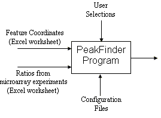
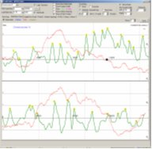
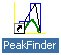

PeakFinder
is part of the supplementary materials for
Genome-wide mapping of the cohesin complex
in
the yeast Saccharomyces cerevisiae
| The PeakFinder
program was developed to find cohesin binding sites represented by the
peaks in yeast chromatin immunoprecipitation (ChIP) microarray data, but
can be applied to plot any measurement against a parameter such as genome
coordinate, to interactively analyze the measurement plot, and to annotate
the peaks on the basis of local properties of the curve. |
|  |  |
| Software Requirements. PeakFinder was
developed and tested under Windows 2000 (but should work under Windows 98
or later). PeakFinder works best with a high-color or
true-color display monitor, and requires a resolution of 1280-by-1024 or
larger. PeakFinder provides sample data to exercise the
various program options. Installation. The Installshield installation program installs PeakFinder in its own C:\PeakFinder directory. Start the program from the desktop icon:  Or, use: Start | Programs | PeakFinder. In addition to the program, the C:\PeakFinder directory contains sample Excel spreadsheets, Coordinates.xls and Ratios.xls. The C:\PeakFinder\Yeast directory has yeast (S. cerevsiae) nucleotide files in FASTA format, one for each chromosome. The C:\PeakFinder\Documenation directory contains the Quick Start Guide and User's Guide in PDF format. Download Peak finder is written in Delphi, runs on a Windows platform and is distributed under the GNU General Public License. The source code is available by contacting the author.
|